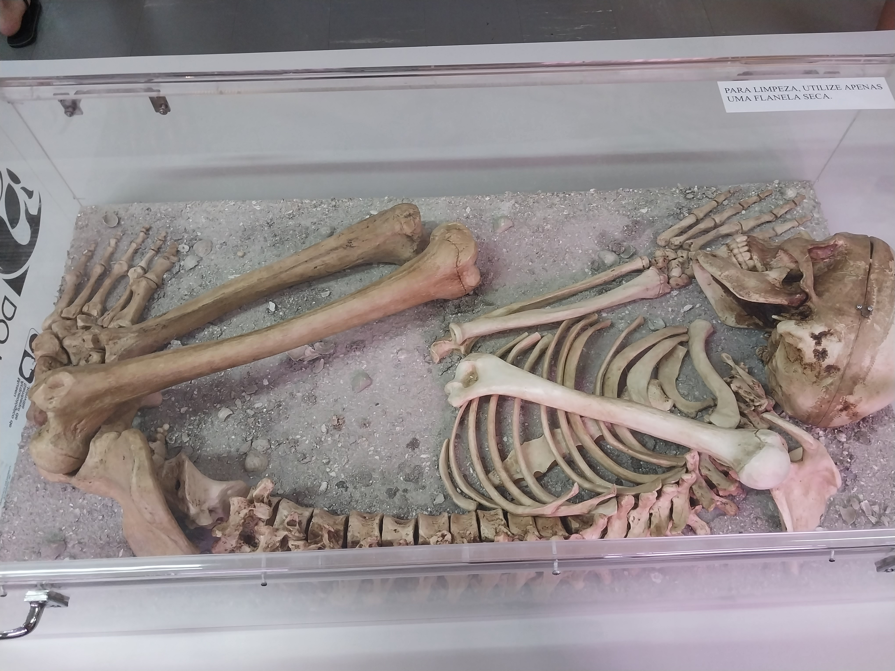

O que é Sambaqui?
Sambaquis são sítios arqueológicos que são encontrados em costas litorâneas. Possuem bases arredondadas e são compostos principalmente por materiais faunísticos como moluscos e conchas. Segundo a PRONAPA, sambaquis podem ser definidos como “sítios arqueológicos compostos predominantemente por conchas” (OLIVEIRA, 2010).
Figura 1: Exemplo sambaqui
Fonte:https://floripaarqueologica.com.br/sitios-arqueologicos-em-floripa/sambaquis/
Localização dos Sambaquis em nossa região:
Figura 2: Sítios arqueológicos de Joinville.
Fonte:Dos Autores, 2023
O povo que vivia no Sambaqui era da espécie Homo Sapiens? Explique.
Sim. Segundo Guidon (2005), “os sítios mais antigos parecem indicar que houve uma primeira migração de Homo sapiens vindo da Europa ou da África, pois estão mais próximos do oceano Atlântico.[...]”. Na América, não viveram outras espécies além do Homo Sapiens, já que o continente americano foi o último a ser povoado, durante a dispersão do Homo Sapiens moderno (FAGUNDES, 2007).
Figura 3 - Crânios encontrados em sambaquis.

Fonte:Dos Autores, 2023
Como esse povo chegou até a América? E, pelos elementos que existem na arqueologia, quando habitaram a região da Baía da Babitonga?
Existem várias hipóteses sobre o povoamento do continente americano, como a da ultrapassagem do Estreito de Bering ou a transoceânica.
O pressuposto de que o Homem teria vindo unicamente a pé. atravessando a Beríngia atrás dos rebanhos de animais que migraram não faz justiça à capacidade intelectual humana, reduzindo o Homem americano a um descendente de um animal não mais capaz que os camelos, mastodontes e bisões que migravam para a América (GUIDON, 1992).
Em Santa Catarina, o sambaqui mais antigo, o sítio Caipora, está localizado aproximadamente a 20 km da atual linha de costa e foi datado em ca. 7400 anos cal. Os sambaquianos aparentemente se instalaram em nossa região por volta de 7500 até 1000 anos atrás, de acordo com as datações realizadas em sambaquis (VILLAGRAN, 2013).
Figura 4 - Caminhos da humanidade
Fonte:Dos Autores, 2023
Qual era a principal fonte de alimentação deles? Como se sabe essa informação?
Segundo as aulas do professor Ivan Furmann, os povos se alimentavam principalmente de mariscos e moluscos, mas também de frutos e da caça de pequenos animais. Esse fato é conhecido pelas conchas e ossadas encontradas, e também pela arcada dentária desgastada dos indivíduos encontrados nos sambaquis.
Figura 4 - Caminhos da humanidade

Fonte:Dos Autores, 2023
O que é um zoólito: Explique e apresente alguma foto que contenha um exemplo de um deles.
Os zoólitos são artefatos com formato de animais feitos de pedra, produzidos pelos sambaquianos. Sendo objetos considerados traços identitários da cultura sambaquiana, os zoólitos podem estar presentes até em funerais, mas também podem ser só um objeto de decoração (GARCIA, et al, 2018).
Figura 6 - Zoólitos presentes na exposição do Museu de Sambaqui.

Fonte:Dos Autores, 2023
Todo sambaqui contém sepultamentos? Explique.
Sim. Os sambaquis eram locais de moradia e vivência, contém a cultura de seu povo preservada. Os sepultamentos possuem um padrão quando são encontrados, dependendo de sua localidade, representando um exemplar cultural. No Sambaqui do Araujo 2, em Guaratuba, os esqueletos eram sempre encontrados perto de onde cresciam árvores (ORSSICH, 1954).
Em alguns casos, os membros estavam muito dobrados junto ao corpo ainda articulado, de modo a sugerir uma redução anterior do volume de carne através de processos como exposição ou dissecação. Sepultamentos múltiplos envolviam mais de um adulto e adultos com crianças. Esqueletos parciais ou ossos isolados também foram enterrados juntamente com corpos completos e articulados (FISH, et al, 2000).
Figura 7 - Exemplar de sepultamento encontrado em sambaqui.
Fonte:Dos Autores, 2023
Existem outras partes do Brasil e do Mundo que contenham construções humanas parecidas com as dos Sambaquis da região da Baía da Babitonga? Explique.
Sim. Sambaquis são construções costeiras espalhadas ao redor do mundo, conhecidas também como “shell mounds”. Estão presentes em regiões litorâneas da Austrália, Estados Unidos, e como nacionalmente conhecido, no Brasil. Desde o século XX, essas construções têm sido reconhecidas arqueologicamente como depósitos artificiais pré-históricos (RODRIGUES, et al, 2016).
Figura 8 - Sambaquis ao redor do mundo.
Fonte:Dos Autores, 2023
Todos os sambaquis encontrados estão intactos ou alguns já foram destruídos? Como isso aconteceu?
Em diversas partes da América a existência de sambaquis prevalece, as maiores concentrações estão na área dos municípios de Cananéia, Iguape e Ilha Comprida, quase uma centena já cadastrados. Mas nem todos os sambaquis encontram-se intactos pois muitos foram destruídos desde a colonização. Atualmente estão protegidos por lei federal (sítios arqueológicos são patrimônio da União) (FOLHA DE S.PAULO, 1996).
Apesar de sua importância arqueológica e paleontológica, além de serem amparados pela Lei Federal 3.924/61 (que dispõe sobre os monumentos arqueológicos no território brasileiro), a conservação desses importantes monumentos naturais é incerta (Ritter, 2022).
Figura 9 - Arqueólogos em escavações de sambaquis.
Fonte:Dos Autores, 2023
Qual a importância de preservar os sambaquis?
A preservação dos Sambaquis é importante pois, além de serem uma fonte pré-histórica do povo sambaquiano, abriga vestígios do passado, nos ajudando a entender como esse povo vivia na época. Visto isso, o principal motivo para a preservação dos sambaquis é serem a única fonte de informações sobre a cultura deste povo, assim resultando em maior entendimento de sua origem e vivência através de estudos arqueológicos (REVISTA BIOTEMAS, 2011).